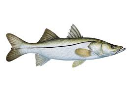

Praia de Jurerê
Introdução
Localizada no norte da ilha de Santa Catarina, no Brasil, Jurerê Internacional é uma praia famosa por suas areias brancas, águas cristalinas e atmosfera sofisticada. É conhecida como um destino de luxo e badalação, atraindo tanto celebridades quanto turistas em busca de momentos relaxantes e diversão. Com uma infraestrutura completa de restaurantes, bares, hotéis e mansões à beira-mar, Jurerê Internacional oferece uma experiência única de praia, combinando o charme natural com o requinte de seus estabelecimentos e serviços. Nesta seção, vamos mergulhar na biodiversidade marinha de Jurerê Internacional, explorando as espécies que habitam suas águas, enquanto também analisamos a qualidade da água e sua adequação, oferecendo informações valiosas para o público interessado.
Especies
Papa-terra

Menticirrhus americanos (conhecido também como Papa-Terra ou Betara), peixe comumente encontrado em canais formados nas costas marítimas, geralmente em locais mais fundos, por isso se encaixam como peixes demersais, porém possuem temporadas em que o Papa-Terra se encontra mais perto da beira do mar, geralmente acontecendo isto no verão. Carne muito saborosa de acordo com os amantes de peixes, tem como principal hábito ser um predador, se alimentando de vários tipos de alimentos como pequenos crustáceos, moluscos, camarões, pequenos peixes, entre outros. Esta espécie é alvo de pesca comercial e possui estado de preservação pouco preocupante (LC).
Bagre

https://cetesb.sp.gov.br/blog/2016/01/27/incidencia-de-ferimentos-causados-por-ferrao-de-bagre-preocupa-turistas/
Siluriformes (conhecido também como bagre), peixe comumente encontrado em costeiras tropicais e subtropicais em águas de pouca profundidade, possuindo o fundo arenoso ou lodoso. Tem como principais características ser um peixe de uma certa facilidade de ser pescado, ou seja, é um peixe característico da pesca esportiva, além de ser um peixe que consegue viver tanto em águas limpas tanto em águas com lama. Por fim sobre a alimentação do bagre, ele como desde caranguejos, pequenos peixes ou até mesmo plantas
Robalo-flecha
https://fishcode.com.br/products/robalo-flecha
Centropomus undecimalis (conhecido também como robalo-flecha), peixe comumente encontrado em águas costeiras, estuários e lagoas em profundidades menores de 20 metros. Tem como principais características se reúnem em bocas de passagens em rios no seu período de desova e se alimentam principalmente de pequenos peixes, camarões e caranguejos.
Raia-viola
https://mundomarinhobr.blogspot.com/2012/02/raia-viola.html
Pseudobatos horkelii (conhecido também como raia-viola ou “Brazilian Guitarfish”), peixe encontrado no oceano Atlântico desde o Rio de Janeiro até a Argentina, este costuma se alimentar de crustáceos, cefalópodes, poliquetas e pequenos peixes e seu estado de conservação é crítico (CR), portanto sua pesca é proibida.
Carapicu
Carapicus

https://paginasdabio.ufpr.br/carapicu/
Os Eucinostomus gula, popularmente chamados de carapicus como muitas espécies de peixes, possuem cromatóforos (células especializadas que permitem ajustar a sua coloração), o que permite mudarem a intensidade de seus padrões de cores, os machos podem exibir cores vibrantes para atrair fêmes, podem alterar também sua coloração em resposta a ameaças ou para se misturar com o ambiente, fornecendo-lhes camuflagem contra predadores ou presas. Os carapicus são comumente encontrados nas águas costeiras do Oceano Atlântico ocidental, desde a Flórida até o Brasil, habitando águas rasas, incluindo estuários, baías e fundos arenosos ou lamacentos. Animais onívoros, eles se alimentam de pequenos invertebrados, plâncton e detritos.
Tainha

https://engeplus.com.br/noticia/economia/2016/epagri-pesquisa-criacao-de-tainhas-em-agua-doce
Mugilidae (conhecido também como tainha), peixe comumente encontrado em águas costeiras e estua-rinas, geralmente em locais rasos em cardumes perto das superfícies. Tem como principal característica ser um grande ativo comercial de várias regiões, como por exemplo Florianópolis, além de ter como ter comportamento migratório sempre se movendo para águas mais quentes durante o período do inverno e retornando ao seu local de reprodução no verão, configurando assim a famosa safra da tainha;
Peixe-Aipim
https://www.youtube.com/watch?v=Mtcj8TpLzls&ab_channel=Leandr%C3%A3o
Sem informações suficientes.
Cocoroca

https://fishcode.com.br/products/cocoroca
Sem informações suficientes.
Balneabilidade
Jurerê, um dos bairros mais renomados e visitados de Florianópolis, foi dividido em seis trechos para avaliação da balneabilidade em 22/05/2024. Todos os trechos foram considerados próprios para banho, com concentrações de E. coli variando de 10 nmp/100ml a 86 nmp/100ml. A média geral de E. coli em Jurerê foi de 47,6 nmp/100ml, o que classifica todos os trechos avaliados como próprios para banho, conforme os critérios de balneabilidade. Portanto, moradores e visitantes podem desfrutar de Jurerê com tranquilidade, sabendo que a água está dentro dos padrões aceitáveis para banho.